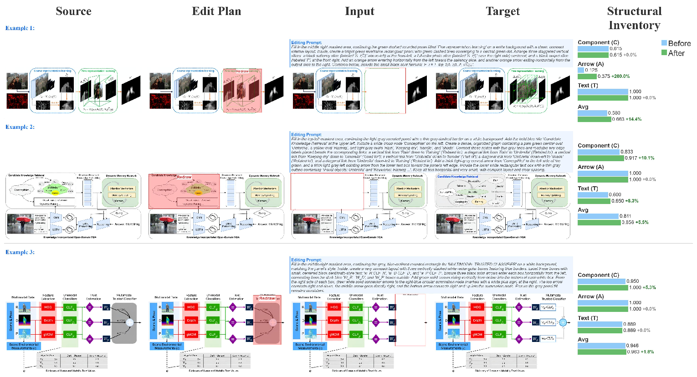

SciForma-9B generated scientific methodology diagrams · Hover 3s to zoom · Click to expand
Structure-Faithful Generation of Scientific Methodology Diagrams
Scientific methodology diagrams — flowcharts, pipelines, and architecture figures that appear in academic papers — demand precise structural fidelity: every component, arrow, and text label must be faithfully represented. Existing text-to-image models generate visually appealing outputs but routinely violate structural constraints.
We introduce SciForma, a 9B-parameter framework that decomposes diagram quality into three independently verifiable axes — Component, Arrow, and Text — guided by a structural inventory. Post-trained with M-DPO, SciForma achieves 69.51% on SciFormaBench-2K — surpassing all open-source models and approaching GPT-Image-1.5 (68.96%). On AIBench, SciForma-9B reaches 70.29, edging human-drawn originals (70.09).
Score ≥ 0.90 on SciFormaBench-2K Hard split · Click any image to expand


GPT-5.4 judge · 2,000 diagrams · Click column header to sort
| # | Method | Avg ↑ | Simple | Medium | Hard | Comp. | Arrow | Text | Open |
|---|---|---|---|---|---|---|---|---|---|
| 1 | GPT-Image-2 | 85.62 | 88.41 | 85.66 | 83.26 | 83.34 | 89.61 | 83.53 | ❌ |
| 2 | NanoBananaPro | 81.34 | 85.30 | 81.70 | 77.50 | 81.10 | 83.60 | 78.70 | ❌ |
| 3 | SciForma-9B + Edit | 72.40 | 79.82 | 72.59 | 66.01 | 76.70 | 69.91 | 70.14 | ✅ |
| 4 | SciForma-9B (M-DPO) | 69.51 | 77.20 | 69.69 | 62.86 | 74.49 | 66.46 | 67.00 | ✅ |
| 5 | GPT-Image-1.5 | 68.96 | 75.50 | 69.60 | 62.60 | 75.70 | 62.50 | 68.20 | ❌ |
| 6 | SciForma-Base (SFT) | 67.59 | 76.01 | 67.43 | 60.83 | 73.52 | 64.64 | 63.84 | ✅ |
| 7 | Wan2.7-Image | 64.71 | 73.90 | 65.90 | 55.30 | 71.90 | 60.30 | 61.10 | ❌ |
| 8 | SenseNova-U1-8B | 51.14 | 59.57 | 51.86 | 43.02 | 61.34 | 50.16 | 40.37 | ❌ |
| 9 | FLUX.2-dev-32B | 48.81 | 57.60 | 49.30 | 40.80 | 62.50 | 38.60 | 44.60 | ✅ |
| 10 | Qwen-Image-2512 | 48.73 | 57.50 | 49.90 | 39.60 | 61.20 | 46.60 | 36.80 | ❌ |
| 11 | Z-Image | 48.50 | 57.20 | 49.70 | 39.40 | 58.30 | 46.90 | 38.50 | ❌ |
| 12 | FLUX.2-klein-base-9B | 33.87 | 42.80 | 34.20 | 26.00 | 51.50 | 25.20 | 23.60 | ✅ |
| 13 | FLUX.1-dev | 20.64 | 26.40 | 20.70 | 15.80 | 40.60 | 11.20 | 8.50 | ✅ |
| 14 | Bagel-7B | 16.31 | 18.40 | 16.20 | 14.70 | 35.50 | 9.50 | 2.20 | ✅ |
vs. Proprietary Models


vs. Open-Source Models


SciForma-Base vs. SciForma-9B (+M-DPO)

5 cases showing improvement from SFT baseline to M-DPO. C/A/T scores shown on right.

SciForma pipeline: two-stage SFT on SciFormaData-700K → M-DPO post-training with per-axis preference pairs.
Editing & Iterative Refinement

Source image → LLM Edit Plan → Targeted Edit → Structural Inventory verification.
SciFormaData-700K

Dataset construction pipeline: PDF extraction → diagram detection → caption generation → quality filtering.
SciFormaBench-2K

Per-axis structural inventory with critical and moderate error severity annotations.

M-DPO training curve. Each component adds incremental gain; Text axis benefits most (+3.16 pts).
| Method | Avg | C. | A. | T. |
|---|---|---|---|---|
| SciForma (SFT) | 67.59 | 73.52 | 64.64 | 63.84 |
| + DPO | 68.42 +0.83 | 74.14 | 65.32 | 65.08 |
| + DPO (Pareto) | 68.55 +0.96 | 74.48 | 65.57 | 64.83 |
| + M-DPO (mean) | 69.31 +1.72 | 74.54 | 66.28 | 66.47 |
| + M-DPO (ours) | 69.51 +1.92 | 74.49 | 66.46 | 67.00 |

User study results.
@article{luo2026sciforma,
title = {SciForma: Structure-Faithful Generation of Scientific Methodology Diagrams},
author = {Luo, Yuxuan and Zhang, Peng and Zhang, Xinjie and
Guo, Xun and Lian, Zhouhui and Lu, Yan},
journal = {arXiv preprint},
year = {2026}
}{kind=link}